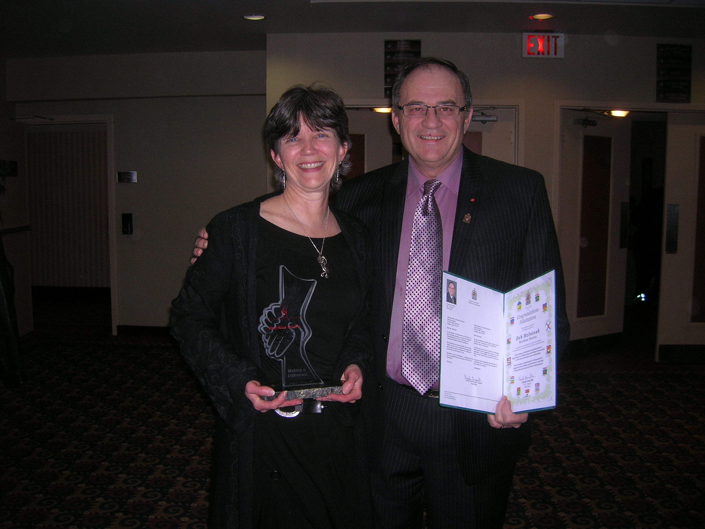
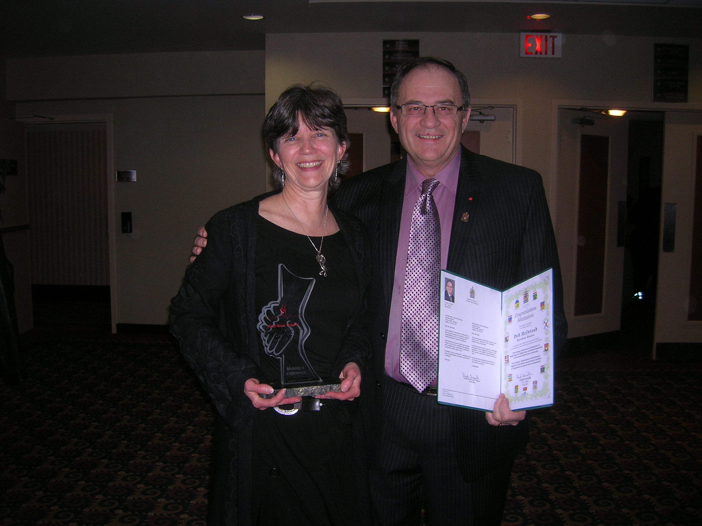
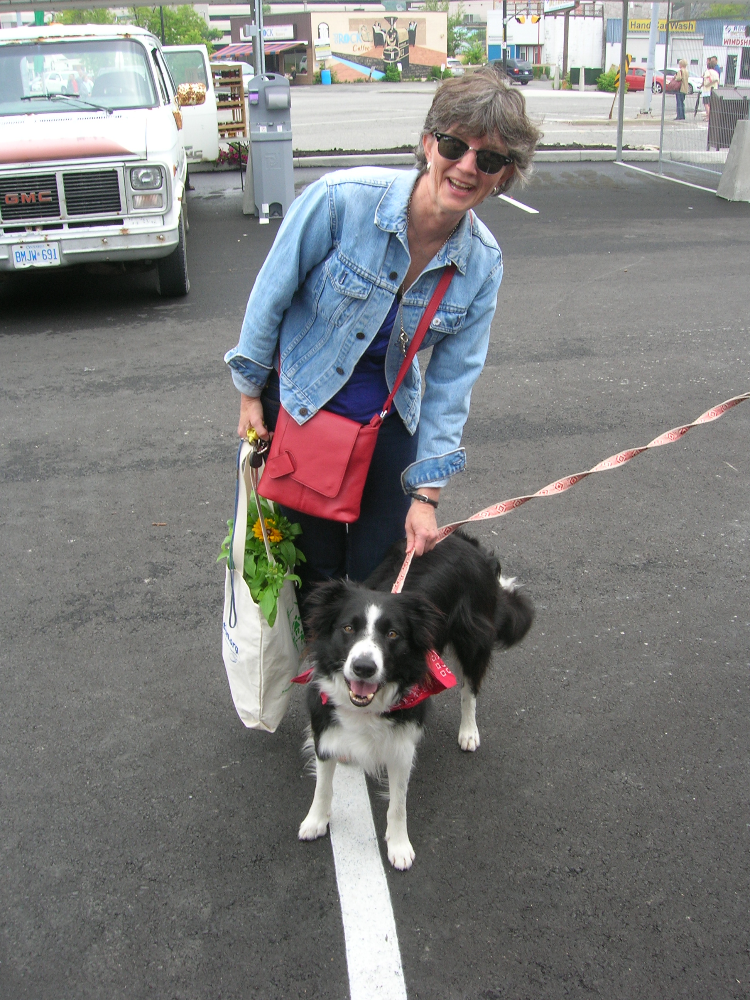
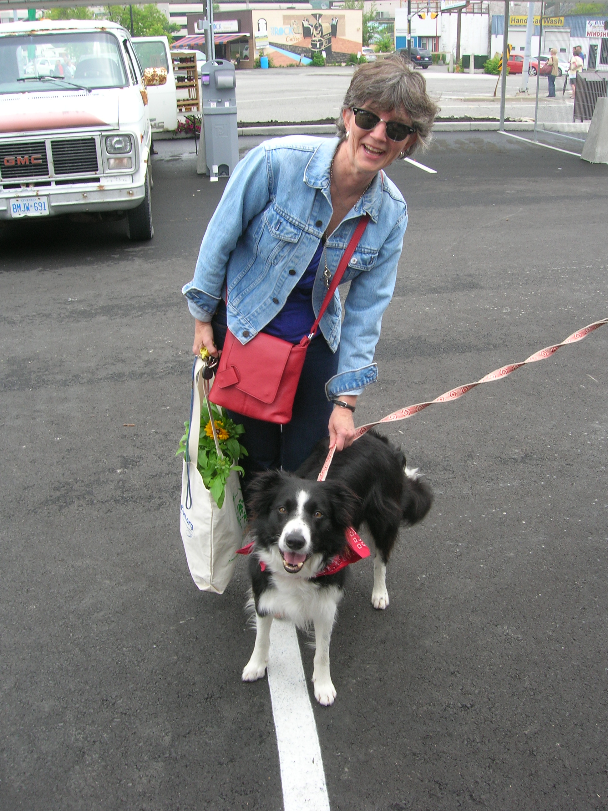

About Deb
Deb McIntosh has a proven track record of achievement, leadership and fiscal responsibility. She works collaboratively with community partners to complete projects, generate creative solutions and seize opportunities.
Deb McIntosh has made Sudbury her home for almost 35 years, and has lived in Ward 9 since 1994.
Currently, Deb applies her business skills as the Executive Director of the not-for-profit Rainbow Routes Association. For the past 10 years, McIntosh has worked in partnership with the community to increase the number of active transportation routes throughout Greater Sudbury and promote their use. Rainbow Routes is credited with the development of many trails/paths including the Ramsey Lake Path, Kelly Lake Trail and the Trans Canada Trail.
McIntosh previously practiced as a Certified General Accountant and currently serves on the boards of the Sudbury Community Foundation, St. Andrew’s Place (Treasurer), and Camp Manitou(Vice President). She is a 2013 YWCA Woman of Distinction Award winner and a founding member of the Out of the Cold hot meal program.
Deb McIntosh is married to Ralph McIntosh, Arts Coordinator for the Rainbow School Board. They have two adult children.

 

 
